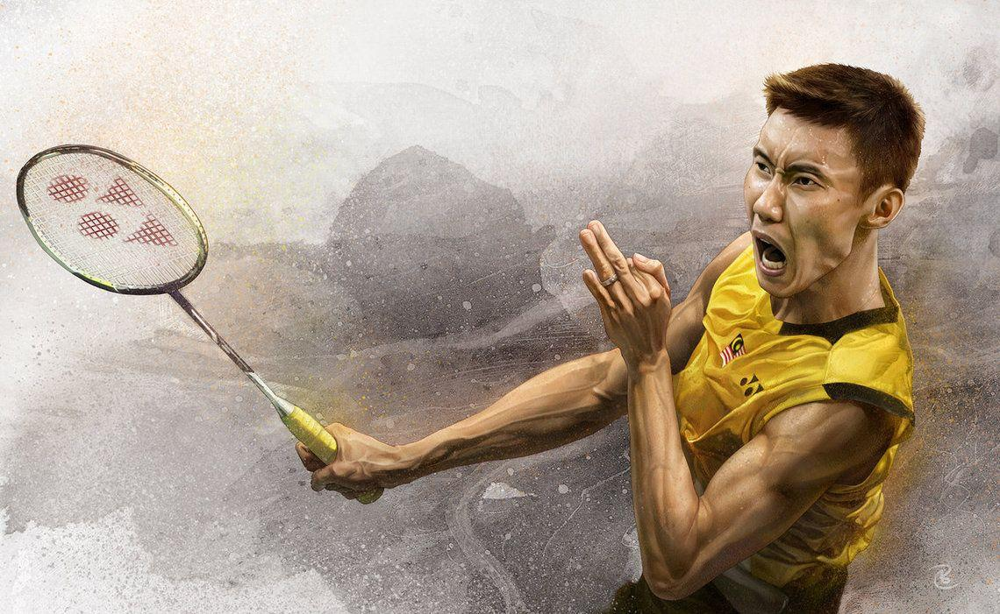

I enjoy badminton for its fast-paced action and strategic gameplay. The intensity of the rallies and the need for quick reflexes keep me on my toes, constantly engaged in the match. Whether I'm unleashing a powerful smash or executing a delicate drop shot, every point feels like a small victory. Beyond the physical aspect, badminton also challenges me mentally, requiring strategic thinking and anticipation to outsmart my opponent. Plus, the social aspect of playing with friends adds to the fun, making each game an enjoyable experience. Overall, badminton is a sport that combines athleticism, strategy, and camaraderie, keeping me hooked every time I step onto the court.

Chess captivates me with its timeless allure and intellectual depth. Every move on the board is a calculated decision, requiring strategic foresight and tactical ingenuity. The mental challenge of analyzing positions, anticipating my opponent's moves, and formulating long-term plans keeps my mind sharp and engaged. Each game is a unique journey, filled with thrilling moments of triumph and sobering lessons in defeat. Whether I'm playing casually with friends or competing in tournaments, the rich history and endless possibilities of chess never fail to fascinate me. It's not just a game; it's a profound exploration of strategy, creativity, and perseverance that continues to inspire and captivate me.
I have been deeply motivated to pursue a job in the field of medecin for the following reasons: